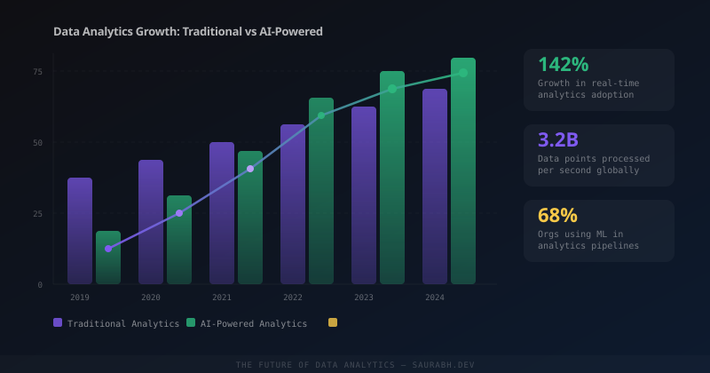

Data analytics is undergoing its most significant structural shift since the data warehouse was invented. The tools, the architecture, the skill requirements, and the fundamental workflow are all changing simultaneously. Here's what's actually happening — and what it means if you work with data.

The Death of Batch Processing as the Default
For decades, the standard analytics workflow looked like this: collect data throughout the day, run an ETL job overnight, wake up to a dashboard that reflects yesterday's reality. This was acceptable when data volumes were manageable and decisions moved slowly.
Neither of those conditions holds anymore. The shift to stream processing as the default — rather than an exotic edge case — is the single biggest architectural change in the field. Tools like Apache Kafka, Apache Flink, and managed services like AWS Kinesis and Google Dataflow have made real-time pipelines accessible to teams that previously couldn't justify the engineering cost.
The implication isn't just technical. When your analytics are real-time, the kinds of questions you can ask change. You stop asking "what happened last week?" and start asking "what is happening right now, and what should we do in the next five minutes?"
From Data Warehouses to the Lakehouse
The traditional data warehouse — highly structured, schema-on-write, optimized for SQL queries — made sense when storage was expensive and compute was the bottleneck. Today both assumptions are inverted. Storage is cheap. Compute is elastic. The rigid upfront schema is now the constraint, not the safety net.
The lakehouse architecture (pioneered by Databricks and adopted by virtually every major cloud provider) collapses the distinction between the data lake and the data warehouse. You store raw data in open formats like Parquet or Delta Lake, and apply schema at query time. This means you can run SQL analytics, ML training, and streaming workloads against the same data store without copying data between systems.
-- Delta Lake: ACID transactions on your data lake
-- Query raw events directly, schema applied at read time
SELECT
user_id,
event_type,
COUNT(*) AS event_count,
DATE_TRUNC('hour', event_timestamp) AS hour_bucket
FROM delta.`s3://your-bucket/events/`
WHERE event_timestamp >= CURRENT_TIMESTAMP - INTERVAL 24 HOURS
GROUP BY 1, 2, 4
ORDER BY hour_bucket DESC;The practical benefit: your ML team and your BI team work from the same source of truth, without the data engineering overhead of maintaining separate pipelines for each.
AI-Augmented Analysis: What It Actually Means
There are two distinct ways AI is entering the analytics stack, and they're worth separating clearly.
The first is AI as a query interface. Natural language to SQL tools — whether built into products like Snowflake Cortex and BigQuery or via standalone tools — let non-technical stakeholders ask questions directly without waiting for a data analyst to write a query. This is genuinely useful and genuinely overhyped at the same time. It works well for simple aggregations and poorly for anything requiring business context that isn't encoded in table and column names.
The second is AI as an analytical layer — embedding ML models directly into the analytics pipeline. Anomaly detection that flags metric regressions before a human would notice. Forecasting models that produce confidence intervals alongside point estimates. Clustering that surfaces customer segments you didn't know to look for. This is where the real leverage is, and it's becoming accessible through tools like Python's scikit-learn, statsforecast, and cloud AutoML services.
import pandas as pd
from statsforecast import StatsForecast
from statsforecast.models import AutoARIMA
# Load your time-series data
df = pd.read_parquet("s3://your-bucket/daily_revenue.parquet")
df = df.rename(columns={
"date": "ds",
"revenue": "y",
"product_id": "unique_id"
})
# Fit AutoARIMA across all product lines simultaneously
sf = StatsForecast(models=[AutoARIMA(season_length=7)], freq="D", n_jobs=-1)
sf.fit(df)
# Forecast next 30 days with prediction intervals
forecast = sf.predict(h=30, level=[80, 95])
print(forecast.head(10))What used to require a dedicated data scientist and weeks of work can now run as a scheduled job in a few dozen lines of Python. The bottleneck has shifted from implementation to interpretation — understanding what the model is telling you, and whether to trust it.
The Metrics Layer: Analytics Finally Gets an API
One of the most underrated developments in the analytics stack is the emergence of the metrics layer — a semantic layer that sits between your data warehouse and your BI tools. Tools like dbt Semantic Layer, Cube, and MetricFlow let you define your business metrics once, in code, and have them be consistent everywhere they're consumed.
This solves a problem every data team knows intimately: the same metric defined differently in four different dashboards, all disagreeing with each other. When your CEO and your product manager are looking at different numbers for "monthly active users," you have a metrics layer problem.
# dbt Semantic Layer — define a metric once, use it everywhere
metrics:
- name: monthly_active_users
label: Monthly Active Users
type: count_distinct
type_params:
measure:
name: active_user_id
filter: |
{{ Dimension('user__last_active_at') }} >= dateadd('day', -30, current_date)
dimensions:
- name: product_line
- name: acquisition_channel
- name: user_countryDefine it once. Every dashboard, every API consumer, every AI assistant querying your data gets the same number. This sounds mundane. In practice it's transformative — it moves analytics from a craft that produces one-off answers to an engineering discipline that produces reusable, trustworthy infrastructure.
The Analyst Role Is Splitting in Two
The traditional "data analyst" job description is bifurcating under these pressures. On one side: the analytics engineer — someone who works closer to the data engineering layer, owns the dbt models, defines the metrics, ensures data quality, and builds the infrastructure that everyone else queries. On the other: the decision analyst — someone who is deeply embedded in a business function, works with stakeholders to frame the right questions, interprets outputs, and translates data into decisions.
Both roles are growing. What's shrinking is the middle — the analyst who writes ad-hoc SQL all day, produces static reports, and hands them to stakeholders who may or may not act on them. AI tools are absorbing that work faster than any other part of the stack.
Data Quality Is the Unsolved Problem
Every advancement in analytics tooling runs into the same wall: garbage in, garbage out. The more automated your pipeline, the faster bad data propagates and the harder it is to trace. Data observability — monitoring your data for freshness, completeness, schema changes, and distributional drift — is the discipline that's emerged to address this, with tools like Monte Carlo, Soda, and the open-source Great Expectations.
import great_expectations as ge
# Validate your data before it enters the pipeline
context = ge.get_context()
validator = context.sources.pandas_default.read_parquet(
"s3://your-bucket/orders_2025_05.parquet"
)
# Define expectations
validator.expect_column_values_to_not_be_null("order_id")
validator.expect_column_values_to_be_between("order_value_usd", min_value=0, max_value=50000)
validator.expect_column_values_to_match_strftime_format("created_at", "%Y-%m-%dT%H:%M:%S")
# Run and get a pass/fail report
results = validator.validate()
print(f"Success: {results['success']}")Data quality tooling is still catching up to the rest of the modern data stack. Most teams are underinvested here relative to how much broken data costs them in engineering time and bad decisions.
What This Means Practically
If you work in data today, the skills that are becoming more valuable are: understanding streaming architectures, writing production-quality Python (not just notebooks), thinking in terms of data contracts and APIs rather than one-off queries, and developing enough ML intuition to evaluate model outputs critically rather than accept them at face value.
The teams that will win are those that treat their analytics infrastructure the same way mature engineering teams treat their application infrastructure — with version control, testing, monitoring, and a clear ownership model. The era of the analyst as a service desk that answers ad-hoc questions is ending. The era of analytics as a product is beginning.